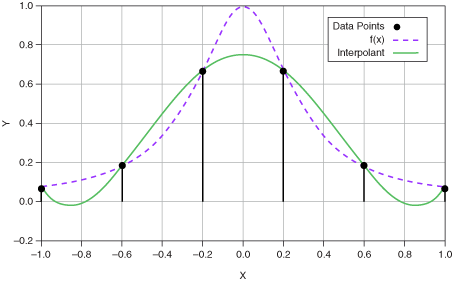
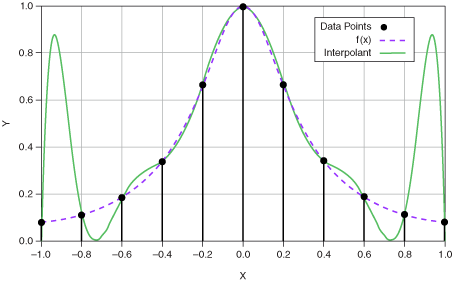

Polynomial interpolation is common because polynomials are easy to evaluate, differentiate, and integrate.
You can express polynomial interpolation with the following Vandermonde matrix:

With six data points, use polynomial interpolation to calculate a five-order polynomial, y = a0 + a1x + a2x2 + a3x3 + a4x4 + a5x5 , for the following equation:
Evaluate the polynomial at each x, as shown in the following figure.

In the previous figure, the polynomial interpolant does not match f(x) closely.
If you choose more data points in the interval [-1, 1], the central points match more closely than the side points, which diverge with more data points, as shown in the following figure.
